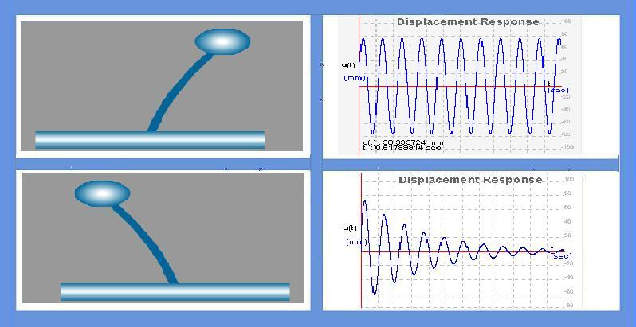

Free vibration is a vibration in which energy is neither added to nor removed from the vibrating system. It will just keep vibrating forever at the same amplitude or a structure is said to be undergoing free vibration when it is disturbed from its static equilibrium position without any external dynamic excitation.


Free vibration is initiated by disturbing the system from its static equilibrium position by imparting the mass some displacement u(0) and velocity u’(0) at time t=0.
There are two cases in free vibration
1. undamped free vibration
2. damped free vibration
Undamped free vibration :
The governing equation for undamped free vibration is

where,
m = mass ,u'' = acceleration, k = stiffness, u = displacement.
The solution to homogeneous equation is :

where,
u(0) = initial displacement ,u'(0) = initial velocity.
Here in this solution we can observe that the system will vibrate only if initial displacement and/or initial velocity is given.

To understand the behavior of single degree of freedom system vibrating with initial excitation (i.e, initial displacement and/or initial velocity and with or without damping).


Start the experiment with some default values of initial displacement (u=10mm) and initial velocity (v=5m/s). and zero damping. Pause the experiment after a few cycles.
Observation 1:
Observe the time period (T) and amplitude.
Again start the experiment freshly, this time modifying the values of initial conditions.
Observe that the time period is independent of initial conditions.
Observation 2: Effect of structures properties on time period
Modify the value of mass and observe the change in time period.
Run the experiment for different values of mass and note the time period every time mass is changed
Draw the graph between mass and time period.
Go to Manual view on Simple Harmonic Oscillator Experiment(Click here)

Q1.
Time period of the structure changes when the initial conditions.
True
False
Q2.
Time period is inversely proportional to mass.
True
False
Q3.
Damping increases amplitude of the vibration.
True
False
Q4.
Value of time period depends on mass.
True
False
Q5.
Two structures with different masses and stiffnesses can have same time period.
True
False

Procedure for the experiment is as follows.

- “T. Irvine, Partial Fractions in Shock and Vibration Analysis”, Vibrationdata Publications, 1999.
- “Dynamics of structures” by Anil K chopra.
- “T. Irvine, The State Space Method for Solving Shock and Vibration Problems”, Vibrationdata Publications, 2005.
- “J.L. Meriam and L.G. Kraige, Engineering Mechanics”, John Wiley, 2002.